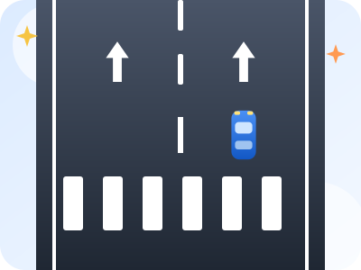
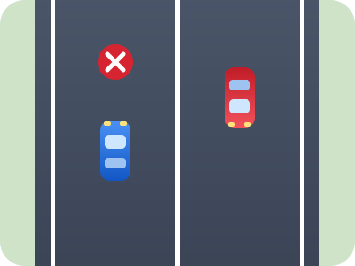
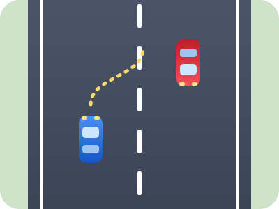
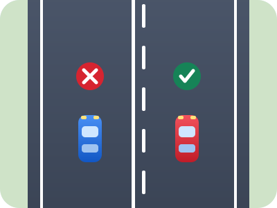
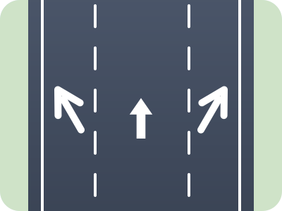
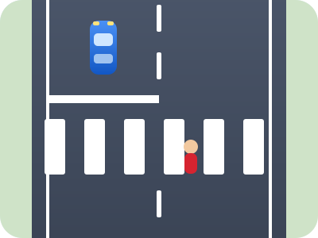
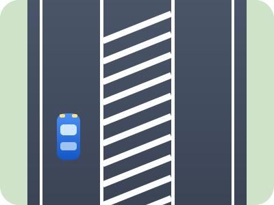
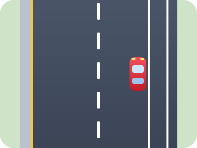

Ligne continue
Face à une ligne continue au milieu de la route, il est :
Cours · Route
Les marquages sont les lignes et les dessins peints sur la chaussée. Ils valent un panneau : on les lit, on les respecte, et ils disent où on peut rouler, dépasser ou s'arrêter.

La ligne au milieu de la route décide de ce que tu peux faire :







Vérifie tes connaissances
Face à une ligne continue au milieu de la route, il est :
Une ligne discontinue au milieu de la route permet :
Sur des hachures blanches bordées de lignes continues (zébras), on peut :
Une ligne jaune continue au bord de la chaussée signifie :
Peut-on franchir une ligne continue ?
Non, en principe, ni la franchir ni la chevaucher. Les seules exceptions concernent des cas précis et sans danger, comme contourner un obstacle ou dépasser un cycliste.
Peut-on s'arrêter sur un passage piéton ?
Non. Il est interdit de s'arrêter ou de stationner sur le passage et à moins de 5 mètres avant et après.
Que veut dire une ligne jaune sur le bord de la route ?
Une ligne jaune continue interdit l'arrêt et le stationnement ; une ligne jaune discontinue interdit le stationnement.